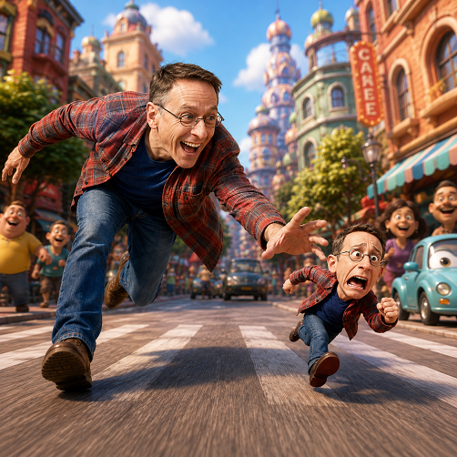

Gemelo 3d IA

¿Qué es?
Crea una vibrante competencia de atletismo a toda velocidad entre la persona real y su clon estilizado en animación 3D de estudio, corriendo codo a codo en una pista deportiva olímpica.
¿Cómo usarlo?
- Abre Google Flow y selecciona Nano Banana 2 en relación 16:9.
- En el menú Ingredients, sube la foto de cuerpo entero o busto (+ Add Image).
- Etiquétala como
Personaje 1para derivar tanto la figura humana como su homólogo animado 3D. - Pega el prompt y pulsa generar para presenciar la carrera hiperrealista.
Cómo personalizar / Parámetros:
Puedes modificar la vestimenta atlética y el color de los dorsales de los corredores en el texto del prompt.
Prompt para copiar
El personaje fotorealista en la imagen de referencia está en una carrera a máxima velocidad, con su cuerpo inclinado hacia adelante, riendo eufóricamente. Usa su ropa del mundo real como se ve en referencia. Extiende una de sus manos hacia una pequeña versión 3D estilo Pixar de sí mismo. La miniatura es una figura CGl estilizada con estilo de juguete que exhibe una exagerada y cómica expresión de pánico, corriendo incontrolablemente por delante con pequeñas piernas animadas a través de un suelo de dibujos animados. Una calle concurrida de la ciudad, representada completamente en un detallado, colorido y encantador estilo 3D CGI de una película animada de Pixar. Edificios de dibujos animados diseñados con divertida arquitectura, coches redondeados animados y alegres peatones de dibujos animado alinean la calle. Las texturas del mundo están estilizadas CGI, en contraste con el verdadero carácter humano. Escena de movimiento de la cámara de ángulo bajo, siguiendo al personaje a nivel de rodilla para enfatizar la velocidad y el contraste de escala. Lente de gran ángulo. Profundidad de campo poco profundo, con agudo enfoque en la cara del personaje principal fotorealista y la miniatura estilizada en la carrera. Dibujo de movimiento en los elementos animados de fondo. luz del día brillante, alegre y estilizada que ilumina de forma realista el carácter humano mientras resalta las texturas CGI del mundo. Un impactante estilo visual de medios mixtos que combina fotografía fotorealista de acción en vivo para el personaje humano principal con animación 3D CGI estilo Pixar de alta calidad para todo el entorno y figura en miniatura. La persona real aparece físicamente integrada en el mundo de los dibujos animados, similar al efecto visto en películas como 'Space Jam' o Una Cilada para Roger Rabbit', pero con moderno representación CGI. Mantén una lealtad 100% estricta a los rasgos faciales reales, estructura ósea, peinado y expresión de risa específica del personaje masculino en la foto de referencia proporcionada. La miniatura 3D debe ser una caricatura CGI estilizada claramente reconocible de esta cara exacta.